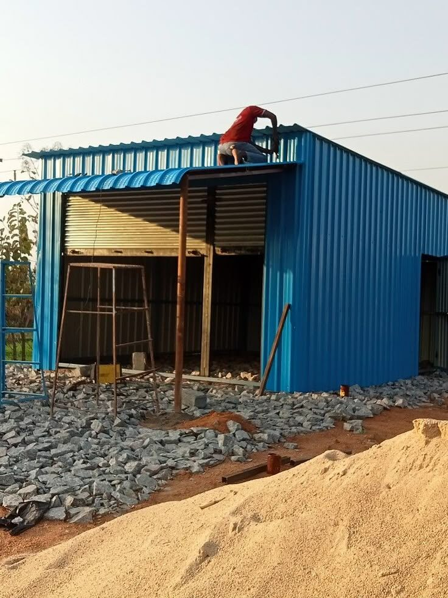

Truss Shed & Workshop Contractor in Badli
Column-free truss bays for small factories, workshops and godowns in Badli Industrial Area and the GT Karnal Road belt, planned in 3D before a single bolt is ordered.

Tin shed & truss structures in Badli
Badli sits on the north-western edge of the city, close to the GT Karnal Road corridor, and its plots mostly belong to small and mid-size manufacturing units. Owners here usually ask us the same practical question: how do we get a clear working floor without paying for steel that we do not need?
A truss shed answers that well. The roof load is carried by a triangulated frame, so the bay stays open inside and the section sizes stay economical. We fabricate the trusses in our workshop, bring them to your plot, and erect them with a crane in a day or two once the foundations are ready. You get a straight, tidy building that you can fit out as soon as the sheets are on.

What Badli plot owners usually build
Small factory bays
A single open bay with a good clear height for benches, light machines and finished-goods racks. Daylight sheets keep the shop bright and the electricity bill lower.
Godowns and stock sheds
Closed or semi-closed sheds for raw material and dispatch. Roller shutters on the road side make loading simple.
Parking and loading canopies
A roofed bay for tempos and trucks. It protects goods in the rain and gives drivers a dry place to wait.
Watch: how a truss shed goes up in 30 seconds
This short 3D animation shows the same sequence we follow on a Badli plot: foundation pads, columns, roof trusses, purlins, sheets and wall cladding. The shed shown is an example size, not a particular customer site.
- Pads cast and levelled
- Columns plumbed and braced
- Trusses lifted and bolted
- Purlins, girts and bracing fixed
- Sheets screwed with sealed fasteners
- Cladding fitted and handed over
Why a truss roof suits a Badli workshop
Look at a roof truss and you see triangles. The two top chords slope up to the ridge, a bottom chord ties the feet together, and the diagonal members between them turn bending into simple push and pull. Because the forces stay inside the frame, the columns carry mostly straight downward load and the bay needs no inner pillars.
For a workshop that is typically 10 to 15 metres wide, this gives a good balance of cost, clear height and strength. We keep the purlin spacing matched to the sheet you pick, brace the frame in both directions, and leave margin so a hoist, a ceiling fan row or a light conveyor can be added later without touching the structure.
3D elevations: front, side and plan
Before fabrication we share a simple drawing set so you can see how the building sits on your plot. The example below shows a 12 m span, 24 m long truss shed with a 5 m eave and 7 m ridge. Your own drawing is made to your plot size, gate position and the height you need, and it shows the span, length and heights just like this.

Shed and steel structure rates in Badli
Quoted per sq.ft (GST extra) with material, fabrication and erection. Wider spans, taller eaves and full wall cladding move the figure within the range. Compare options on our tin shed cost guide.
What we plan around in Badli
Access for the crane
Narrow approach roads decide how long a truss can be carried in one piece. We check this at the survey and split trusses into sections when the lane is tight.
Water and drainage
Low-lying plots can hold water in monsoon. We raise the column pedestals and give the roof enough slope and gutters so the water leaves your plot.
Dust and heat
Light-coloured sheets, a ridge vent and a few daylight panels keep a closed workshop cooler and brighter than a plain tin box.
Future bays
If you may add another bay later, we line up the end frame so the new trusses simply continue the building.
From first call to handover in Badli
Visit and measure
We walk the plot, note gate width, road access and ground level, and take your height and span needs.
Drawing and quote
You get a layout with the frame, openings and heights, with a written rate for every item.
Workshop fabrication
Trusses, columns and purlins are cut, welded and primed in our workshop.
Erection and finish
Crane lifting, sheeting and fastener checks. Handover comes with a GST invoice.
Roofing and frame choices for Badli units
Galvanised or colour-coated sheets
Plain GI is the economical choice for a working shop. Colour-coated sheets look cleaner and last longer where the shed faces a road.
Translucent daylight strips
A few strips in the roof bring in daylight. We place them away from machines that heat up under direct sun.
Primed steel with finish coat
Red-oxide primer and a finish coat protect the frame. We recommend a repaint cycle suited to the plot, not a blanket promise.
What changes your Badli quote
Clear span. A wider bay needs deeper trusses and heavier columns, so the rate climbs with span.
Eave height. Extra height means longer columns and more wall sheet, which adds both steel and sheeting.
Open or closed sides. An open-side canopy costs less than a fully clad workshop with shutters and doors.
Ground and drainage. Soft or filled ground may need deeper footings, which we check before quoting.
Worked example: a 40 × 80 ft truss workshop is 3,200 sq.ft. At ₹200–300 per sq.ft before GST that is roughly ₹6,40,000 to ₹9,60,000. The final figure is confirmed in writing after the survey. Try the shed cost calculator for a quick estimate.
What to keep ready for your Badli site visit
A few details help us quote faster. Drawings are not needed.
Plot and photos. Share the plot size and a few photos or a WhatsApp location pin from Badli.
What goes inside. Tell us the benches, machines, racks or vehicles that will occupy the bay.
Height and openings. Mention the clear height you need and the width of any shutter or gate.
Timeline and access. Share the date you want it ready and how a crane or truck can reach the plot.
Projects from our Delhi NCR portfolio



Photos are real projects by R.R Teen Set Solution across Delhi NCR. See the full projects gallery.
Areas we cover around Badli
We work across Badli Industrial Area, Samaypur Badli, Jahangirpuri, Libaspur, Bhalswa, Azadpur, Alipur and the GT Karnal Road belt. For taller buildings and long spans see our industrial shed page.
Frequently asked questions — Badli
What does a truss shed cost in Badli?
A tin shed in Badli starts from about ₹180 and goes up to ₹250 per sq.ft before GST, and an industrial truss shed runs ₹200–300. Span, height, sheet type and cladding set your exact rate, and we confirm it in writing after the survey.
Why choose a truss roof over plain angle and pillar framing?
A truss lets the bay stay open inside, which is useful for machines, benches and movement. It also uses steel efficiently for spans of about 10 to 15 metres.
How long does a workshop shed take?
Most small and medium workshops take around two to four weeks from drawing approval, depending on size and how soon the foundations are ready. We give a dated plan in the quote.
Can the shed have a mezzanine later?
Yes, if you tell us at the start. We leave the clear height and column positions so a steel mezzanine can be added without disturbing the roof.
Do you build in narrow lanes near Jahangirpuri and Libaspur?
We do, by fabricating in sections that can be carried through the lane and joined on your plot. We confirm access during the survey.
Do you provide drawings before work starts?
Yes. You receive a layout with the span, length and heights, and you can change openings and height before fabrication begins.
How do you keep the frame from rusting?
The steel gets a primer and a finish coat, joints are sealed, and roof sheets are fixed with proper washers. A small repaint every few years keeps it healthy.
Can you extend or repair an old shed in Badli?
Yes. We re-sheet roofs, replace damaged purlins and add bays to existing sheds. See our roof repair guide.
Get a free site visit in Badli
Free survey and a clear written quote within 24 hours of the visit. Call or WhatsApp Subhash Kumar directly.